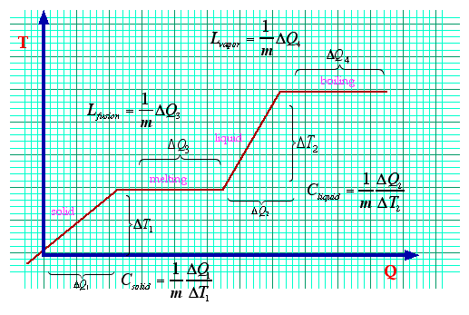

When we add heat, the temperature rises. How much? This is what the idea of heat capacity is all about. It takes a certain amount of energy to raise its temperature. This is a way to account for it. As so many things in Physics do, it starts with a graph.
Wow, what a busy graph! Lets take this one step by step. This could be for any substance but lets consider the lowly ice cube. The leftmost part of this graph would be water in its solid phase. As a solid, if I add heat, the temperature would slowly rise in direct proportion to the amount of energy I transferred into it. With each added joule, I increase the amount of internal energy. Consequently, that ephemeral quantitative measure of average internal kinetic energy: the temperature, also rises. The slope of this line (remember that?) is called the heat capacity. Divide the heat capacity by the mass and you get the specific heat. This goes on for quite a while until something interesting happens.
- How much energy does it take to bring a 100gm ice cube from -10°C to 0°C?
- We need the heat capacity of ice which is the slope of the line in the first part of the graph: 2100 J/(kg.°C). The calculation thus proceeds as: 10°C.2100 J/(kg.°C).0.100kg = 2100J
Inside the crystal lattice the rigid connection (Van der Waals bonds) between the soldly packed water molecules start to break. The temperature stops rising. All of the energy stops going into making the molecules vibrate at higher amplitude and, instead, goes into destroying the crystaline order. During this point the temperature stays steady. This is actually a great thing. Because of this effect, the temperature stays locked a particular value for a wide range of heat values. The ice and water stay in an equilibrium locking the temperature at 0°C. This plateau is called the Latent Heat of Fusion. Every substance has a different value for this quantity. You simply measure the amount of heat it takes to take a slab of stuff from a rigid solid to a liquid. Divide this amount of heat by the mass of stuff and, violá, the latent heat of fusion.
- How much energy does it take to bring a melt that 100gm ice cube at 0°C?
- We need the latent heat of fusion of ice which is the length of the line in the plateau region: 335 kJ/kg. The calculation is simply: 335 kJ/kg.0.100kg = 33.5 kJ or 33500J
Once everything is melterd things go, more or less, back to normal. The heat starts going back into making the molecules jostle one another in an increasingly annoying fashion. More heat, more jostling, until (you guessed it) another transition point is reached: boiling. At this stage the heat stops going into making the molecules move faster and go into making them break apart and go "airborne." This is another fabulous feature of physics which we enjoy in cooking. A boiling pot of water will stay nicely at 100°C until all the water is gone. We don't have to sit around playing with the fire to keep the temperature at a steady value. Who needs themostats when you have the Latent Heat of Vaproization to keep an eye on things.